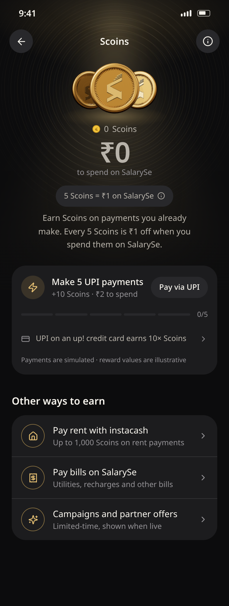
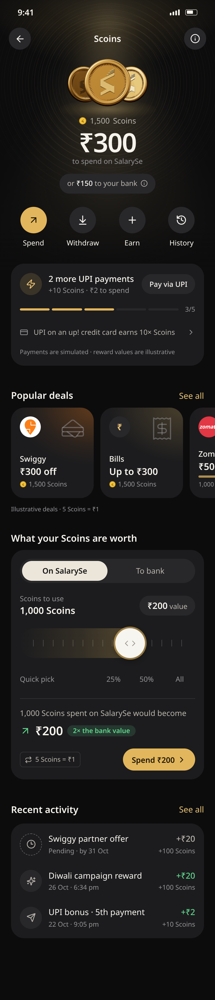
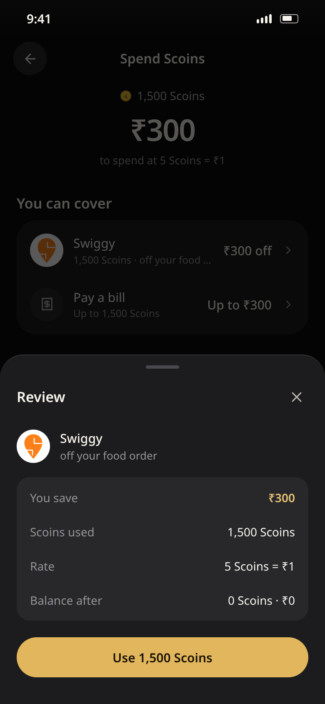
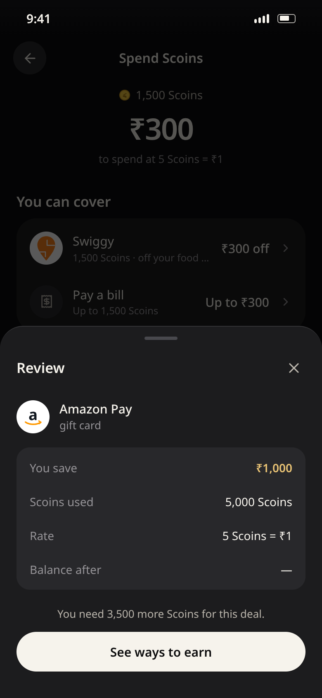
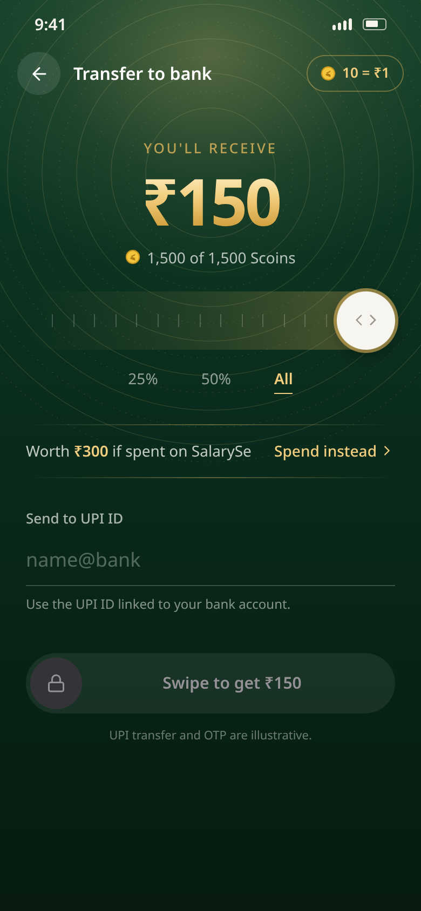
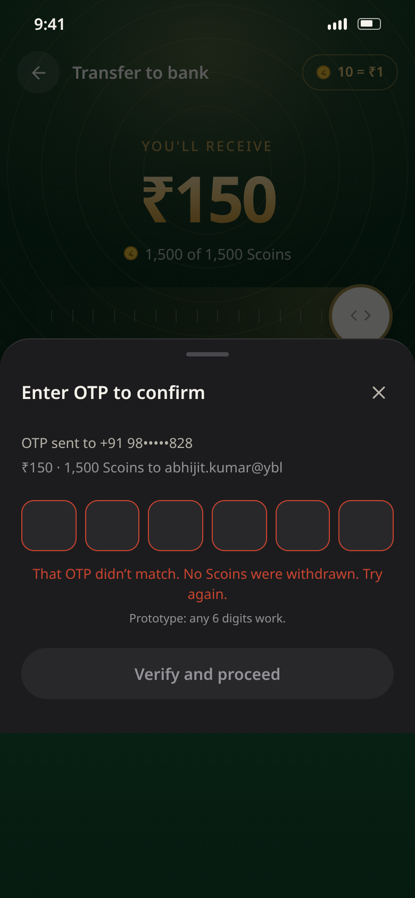
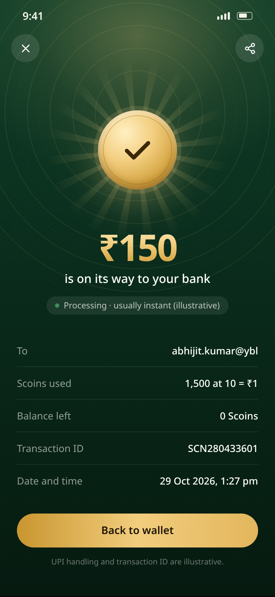

SalarySe · Scoins redesign · UX summary
People don't use Scoins because they can't tell what they're worth
Goal: every user knows their balance in rupees, the better way to use it, and the next step to earn more.
5 Scoins = ₹1Spent in-app (deals, bills). 2× the value.
10 Scoins = ₹1Withdrawn to bank via UPI.
Same balance, two pricesUsers must see both before they choose.
Problems
- Value is hidden. The balance shows as points with no rupee figure.
- Two rates, no comparison. Withdrawing costs half the value, and users only find out afterwards.
- Zero balance is a dead end. New users see "0" and no way to earn.
- Earning is invisible. No progress toward the next reward, so no reason to come back.
- Low trust. No receipts and no history explaining where Scoins came from or went.
User question → answer on screen
- "What's it worth?" → the balance in ₹ first, Scoins second, the bank value alongside.
- "What can I get now?" → deals the balance already covers, sorted by saving.
- "How do I get more?" → the next reward with progress (3/5 UPI payments).
- "Is cash-out worth it?" → the exact ₹ you receive, plus what the same Scoins buy in-app.
- "Did it work?" → a receipt, the balance left, and the transaction in history.
Every state has one clear action
| State | User sees | Primary action |
|---|
| New, ₹0 | How Scoins work, and the first reward to aim for | Make 5 UPI payments |
| Has balance | ₹ value, deals covered, next reward | Spend on a deal |
| Cardholder | Card rewards and the 10× UPI boost | Pay with the card |
| Spent all | What was saved and the next reward | Earn again |
| Not enough | The exact shortfall in Scoins | See ways to earn |
Core flows: value within 3 taps
Spend Wallet → a deal you can cover → review: you save ₹, Scoins used, balance after → confirm → voucher + balance left
Withdraw Wallet → amount in ₹ (in-app value shown) → UPI ID checked inline → swipe → OTP → receipt
Earn Wallet → next reward → pay via UPI → progress moves → reward lands with a toast
Trust Any history row → what it was, the rule that earned it, the running balance
Behaviour model · guardrails · measurement
Make earning visible, spending easy, and cashing out an informed choice
Behaviour model (B = MAP)
- Motivation: a ₹ figure, not points. "₹300 to spend" pulls harder than "1,500 Scoins".
- Ability: deals the balance already covers come first, amounts are prefilled, and one review screen.
- Prompt: UPI progress (3/5), a reward-landed toast, "Almost there: 200 more Scoins".
Pay via UPI→progress→reward→spend in-app→save ₹↺
Guardrails: no dark patterns
- Withdraw is always one tap from the wallet. In-app is the better deal, never a forced one.
- The rate is shown on every amount, in both directions.
- A failed transaction never touches the balance, and it says so.
- Deliberate gestures for money out: swipe, then OTP.
- Balance = earned − spent − withdrawn, reconciled on every change.
Measure
| Metric | Tells us |
|---|
| First reward ≤ 7 days | The zero-balance state works |
| Redemption rate | Value is understood |
| In-app share of redemptions | The 2× value lands |
| Withdraw → spend switches | The comparison is seen |
| UPI payments per user | The earn loop holds |
| "Where did my Scoins go?" tickets | Trust goes up as these fall |
Key moments

₹0: how to earn, not an empty wallet

Balance in ₹ first, next reward below

Review: saving, cost, balance after

Short: the exact gap, then a way to earn

Cash-out: exact ₹, with the in-app value beside it

Failure: "No Scoins were withdrawn"

Receipt: amount, ID, balance left